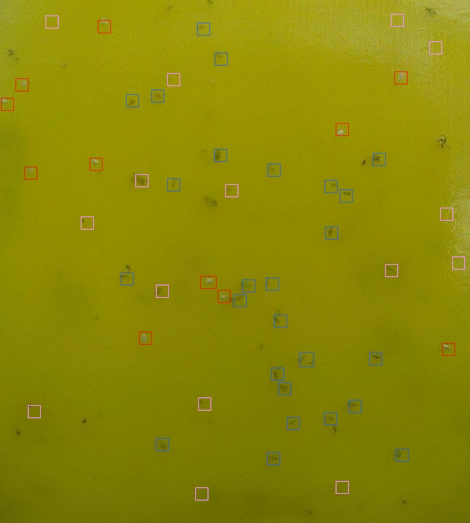
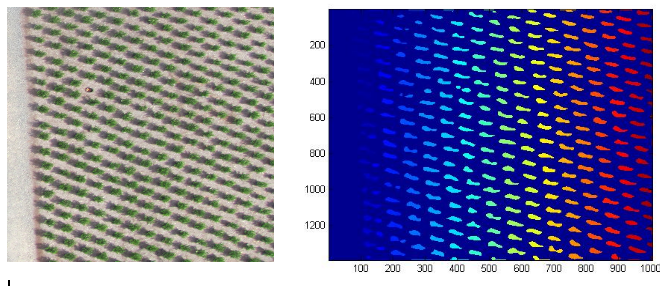
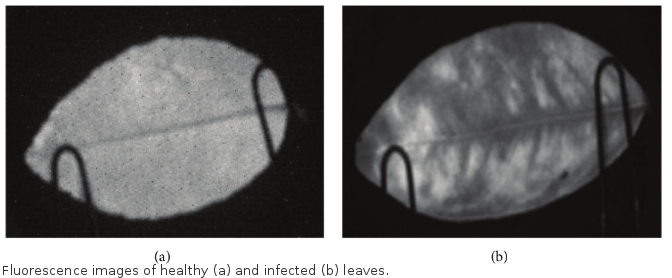

Ratnesh Kumar
I work on problems relating to Video Understanding: Video Segmentation, Multiple Object Tracking, Action Localization/Detection.
Broadly I am interested in Computer Vision using Discrete / Continuous Optimization and Machine Learning. I also like to work on Image Processing related problems.
Please refer to my Projects page for details on current and previous works of mine.
I defended (Dec - 2014) my PhD at STARS TEAM, INRIA, Sophia Antipolis. My thesis can be found here:
THESIS .
I did my Masters at
University of Florida in 2010 and Bachelors of Engineering at Manipal University , INDIA in 2007.
Projects
Vehicle Re-identification:
We demonstrate the importance of sampling data during training of triplet loss. for the task of vehicle re-identification.

• Ratnesh Kumar, Edwin Weill, el al. Vehicle Re-identification: An Efficient BaselineUsing Triplet Embedding,IEEE IJCNN' 2019. [pdf ]
• Co-author for CityFlow Benchmark at CVPR 2019 - Oral.
Exploiting Global Features for Robust Pose Tracking:
In this work, we improve pose tracking using global color and motion features. Global motion feature computation is aided by extracting multiple "diverse" solutions from a model.
Comparative Output on VideoPose
• Ratnesh Kumar, Dhruv Batra. Pose Tracking by Efficiently Exploiting Global Features, IEEE WACV' 2016. [pdf ] [Poster] [Presentation-Slides]
Multiple Object Tracking :
In this work, we view multiple object tracking as a graph partitioning problem. Given any object detector, we build the graph of all detections and aim to partition it into trajectories. To quantify the similarity of any two detections, we consider local cues such as point tracks and speed, global cues such as appearance, as well as intermediate ones such as trajectory straightness. These different clues are dealt jointly to make the approach robust to detection mistakes (missing or extra detections). We thus define a Conditional Random Field and optimize it using an efficient combination of message passing and move-making algorithms. Our approach is fast on video batch sizes of hundreds of frames. Competitive and stable results on varied videos demonstrate the robustness and efficiency of our approach.
[MRF, Multi-labeling , Message Passing, Iterated Conditional Modes]
PETS S2L1 comparative output.
•Ratnesh Kumar, Guillaume Charpiat, Monique Thonnat. Multiple Object tracking by Efficient Graph Partitioning. ACCV' 2014. [pdf] [Poster]

Smaller circles indicate detections (nodes) and collapsing them helps in swift optimization : O(|V|^2), instead of O(|V|^6), for correcting a faulty labeling (leftmost).
Video Representation :
In this work we aim to join spatial and temporal aspect of a video into a single notion : Fiber. A Fiber is a set of trajectories spatially connected with a triangular mesh.Pros:
- A spatio-temporal neighborhood system to compute various relevant criterions.
- Unlike approaches based on super-pixels, a fiber is built jointly by considering spatial and temporal aspects of a video.
- In addition to providing association label for a pixel, we also provide a "long term" temporal reliability measure which assesses long term temporal color coherency.

Distance Correlation based Feature Descriptor :
Traditional covariance measures only linear relationship between random variables. To overcome this, recently a novel measure is proposed by [Szekely & Rizzo 2009] using ideas stemming from the Brownian Motion. Distance correlation between two random variables is zero iff they are independent or the samples are identical.
•Slawomir Bak, Ratnesh Kumar, Francois Bremond. Brownian descriptor: A Rich Meta-Feature for Appearance Matching,IEEE WACV’ 2014. [pdf]

More Information on Brownian (Distance) Correlation can be found on this webpage :[Link]
Other Projects
Insect Classification in Greenhouse :
The purpose is to develop a classification system for the automatic detection of harmful insects in greenhouse plants. The classifier needs to decide among three classes : whitefly, greenfly or a background (i.e. false positive from the detection)
•R. Kumar, V.Martin, S.Moisan, Robust insect classification applied to real time greenhouse infes-tation monitoring, VAIB workshop, ICPR 2010. [pdf]
•A detailed report on detection of insects using affine invariant corners, and insect classification can be found here [pdf]
Tree Counting in Areal Images :
The workflow consists of low pass filtering and anisotropic diffusion to smooth out small gradients and, subsequently detecting blobs using zero crossings of the second derivative in the diffused image. Its motivated from the work on olive-tree extraction in satellite images by [K. G. Karantzalos , D. P. Argialas 2004]
Diseased and Healthy Leaf Classification for Citrus Trees :
As can be noticed in the following figure, the texture differs significantly for the diseased leaf. Hence the use of Haralick's features for classification.
• C. Wetterich, R. Kumar, S. Sankaran, J. Belasque Jr., R. Ehsani and L. Marcassa. ”A comparative study on application of computer vision and fluorescence imaging spectroscopy for detection of Huanglongbing citrus disease in USA and Brazil” Journal of Spectroscopy, 2012. [pdf]
Utilities
List of utilities and tools used during my PhD.
Readings and utilities for Inference Algorithms
- Loeliger, H.-A., "An introduction to factor graphs," Signal Processing Magazine, IEEE , 2004.
- Jonathan S. Yedidia, William T. Freeman, and Yair Weiss. Understanding belief propagation and its generalizations, 2003
- Kschischang, F.R.; Frey, B.J.; Loeliger, H.-A., "Factor graphs and the sum-product algorithm," Information Theory, IEEE Transactions on , 2001.
- Chapter 8 in Bishop's PRML book.
- An indispensable read for comparison of various discrete energy minimization algorithms : "A Comparative Study of Modern Inference Techniques for Discrete Energy Minimization Problems", CVPR, 2013.
OpenGM (C++) : Apart from their fast implementations of algorithms like Lazy-flipper and many more, this library also provides easiest way of interfacing a host of other libraries like libdai, Grante, FastPD, MPLP and others. This also provides interfaces to optimization libraries like CPLEX and GUROBI. [link]
Various Inference and Optimization algorithms by Thomas Schonermann : Includes recently proposed Generalized Sequential TRW [link]
My CV
Those of us in academia have ridiculously long CVs. I have included an abridged version here.